卷积神经网络基础
目录
- 卷积神经网络
- 全连接层
- 卷积层
- 池化层
一、卷积神经网络
（一）CNN（Convolutional Neural NetWork）
卷积神经网络：所有包含了卷积层的网络
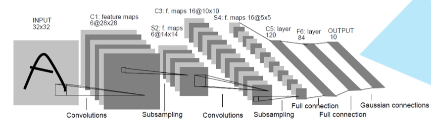
- 雏形：LeCun 的 LeNet（1998）的网络结构（卷积神经网络发展史中的第一个卷积神经网络）
（二）卷积神经网络（CNN）的发展史
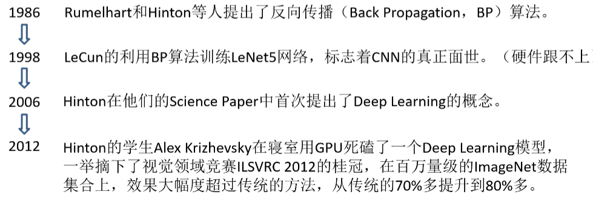
（三）卷积神经网络（CNN）的应用
- 图像分类
- 图像检索
- 目标检测
- 图像分割
- 无人驾驶
- 图像描述
- 图像风格迁移
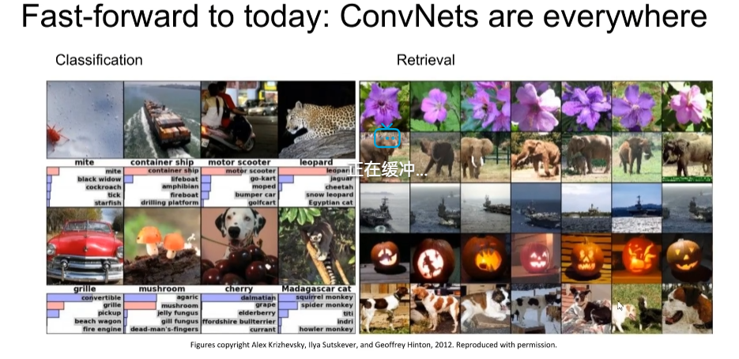
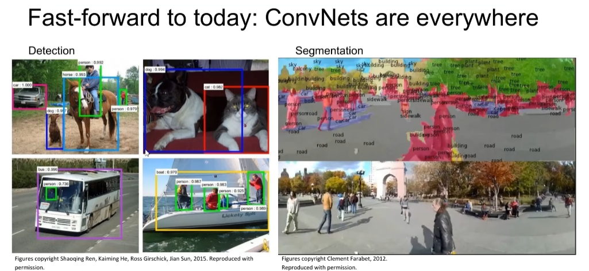
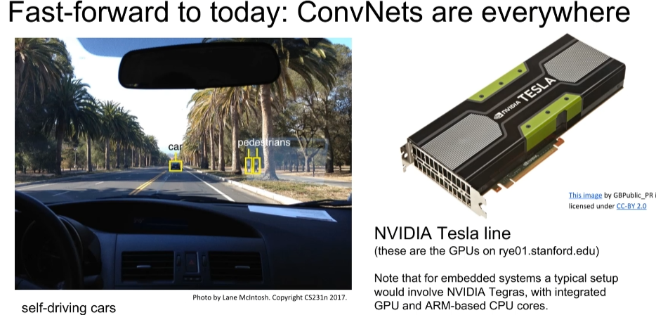
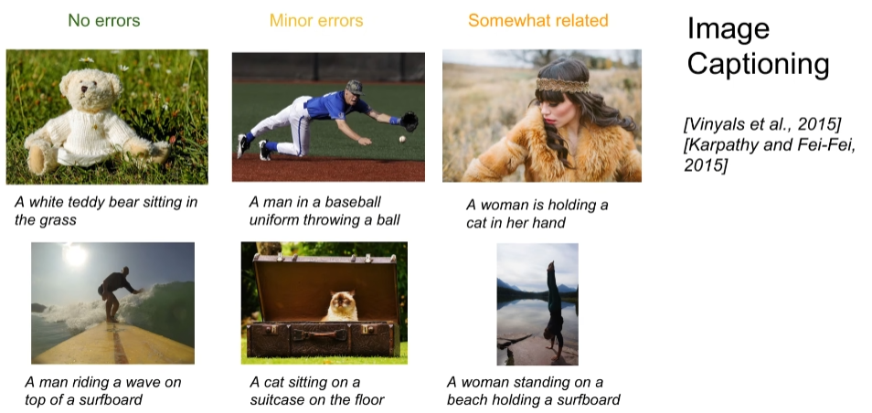
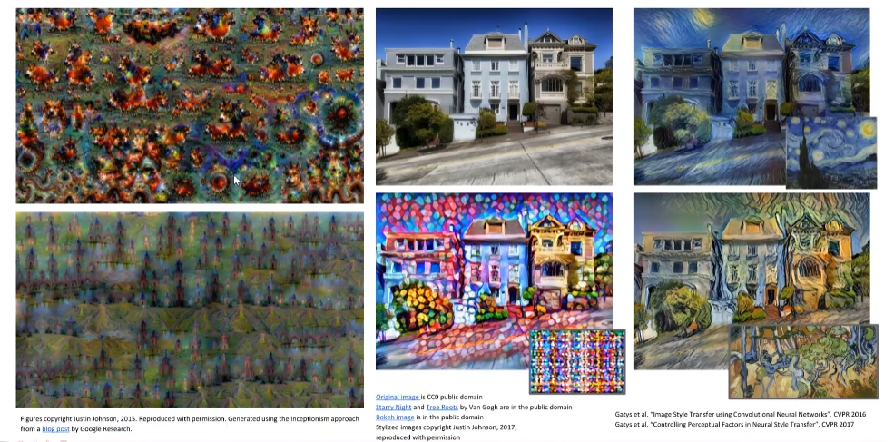
二、全连接层
（一）BP（back propagation）算法
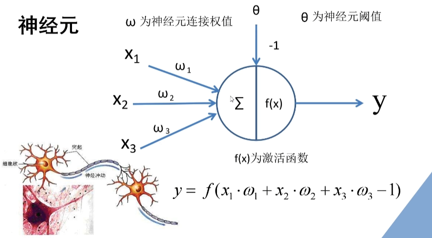
BP（back propagation）算法包括信号的前向传播和误差的反向传播两个过程。即计算误差输出时按从输入到输出的方向进行，而调整权值和阈值则从输出到输入的方向进行。
- 信号从左到右的正向传播过程中能够得到一个输出值，然后将输出值和我们所期望得到的输出值进行对比得到误差值
- 通过计算每一个节点的偏导数，计算得到每个节点的误差梯度
- 将得到的损失值反向应用到损失梯度上，就达到了误差的反向传播
（二）实例：利用BP神经网络左车牌数字识别
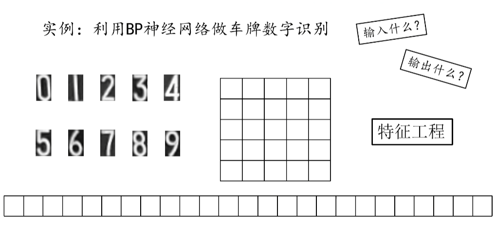
1、输入层
图片的读取与转换
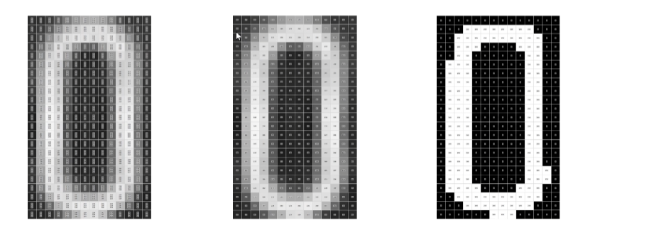
- 首先，读入一张彩色的RGB图像，可以看到每个像素中都有三个值，即RGB分量
- 对图像进行灰度化，得到中间的图像，此时每个像素值只有一个分类了
- 二值化处理，得到黑白图像
滑动窗口（卷积核）
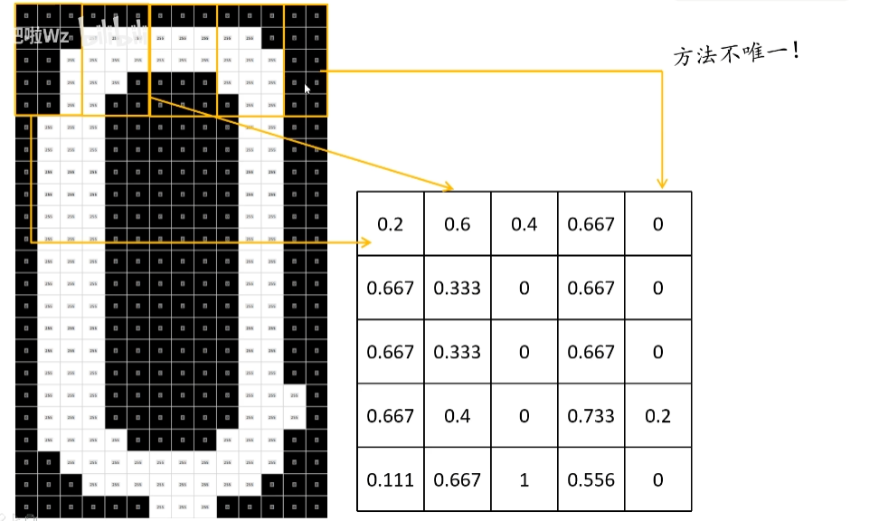
- 用 5行3列 的窗口在整个图像上进行滑动，每滑动到一个地方就计算白色像素占整个像素的一个比例
- 如果窗口滑动时越界，可以再边界补一行或列的零，或者提前判断是否越界，然后改变窗口大小即可
- 得到一个 5 * 5 大小的矩阵
处理结果矩阵得到输入层
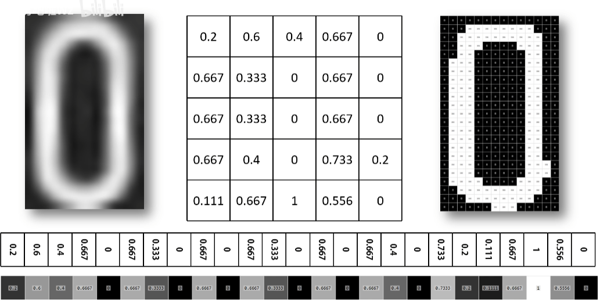
- 将5 * 5 大小的矩阵按行展开得到一个一行25列的的行向量
- 将得到的行向量当成输入神经网络的一个输入层
2、输出层
one-hot 编码：是常见的一种对标签进行编码的方式
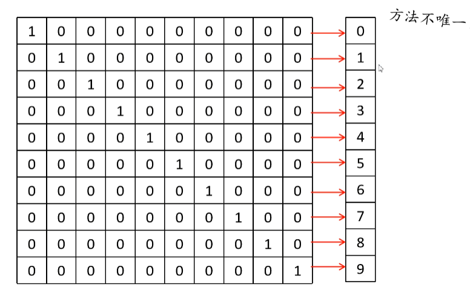
3、网络训练
有了输入和期望的输出，就能对网络进行训练
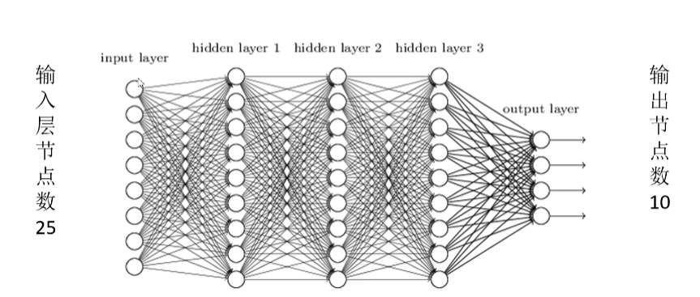
- 在实际的训练过程中，我们可以将输入层节点数设为25个节点，输出层的基数设为10个节点，中间的隐层可以按情况进行设置，这样就可以完整的对神经网络进行设置了
三、卷积层
CNN中独特的网络结构
一维卷积计算过程

| 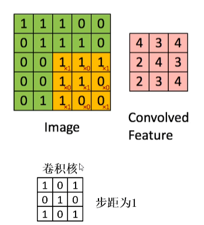 |
- 把卷积核覆盖到要计算的特征层上，将卷积核上的值与特征层上的值进行相乘，然后再进行相加，就得到了结果中的一个值
- 每滑动一步计算一个值
- 全部值摆成一个矩阵，就是最后的卷积计算结果了
卷积的目的
进行图像的特征提取
卷积特性
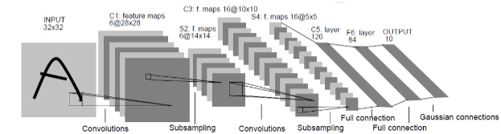
- 拥有局部感知机制：因为是卷积以滑动窗口的形式在要计算的特征层上滑动计算
- 权值共享：在滑动计算过程中，卷积核的值不会发生变化
卷积优势——权值共享
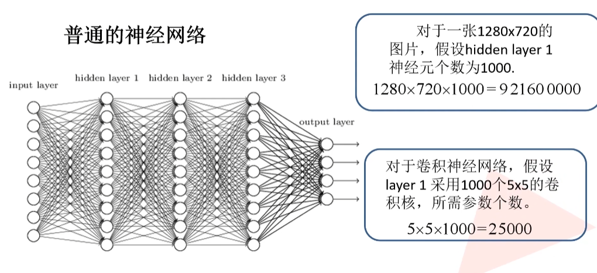
普通网络和卷积网络神经元的个数是如何确定的？
多维特征矩阵的卷积计算
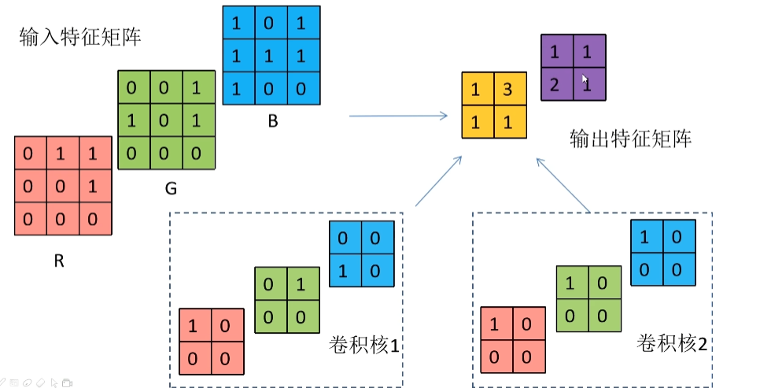
- 输入有RGB三分量的彩色图片
- 卷积核需要与输出特征矩阵深度分别对应的深度保持一致
- 将卷积核的每一个维度放到对应的维度上进行滑动卷积
- 最后将各个维度的卷积结果进行求和操作得到一个卷积层
- 再利用卷积核2对输入特征层进行卷积并得到另一个输出矩阵
- 将输出特征矩阵进行拼接，就得到了整个输出的特征矩阵
总结
- 卷积核的 channel 与输入特征层的 channel 相同
- 输出的特征矩阵 channel 与卷积核个数相同
思考
加上偏移量bias该如何计算?
将卷积计算结果的各个值加上偏移量即可
加上激活函数该如何计算?
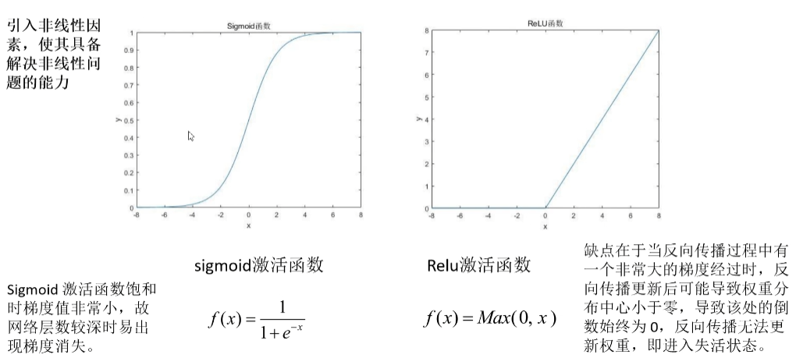
- 计算过程是线性计算过程，所以需要引入非线性因素
- 再反向传播误差的过程中，经过 sigmoid 激励函数的结果求导起来很复杂，而 Relu 激励函数求导方便，俩各有优缺点
- Relu 激励函数的缺点？？
- 在训练过程中建议不要一开始就使用特别大的学习率，因为这样很可能会导致很多神经元失活
如果卷积过程中出现越界的情况该怎么办?
- 补零
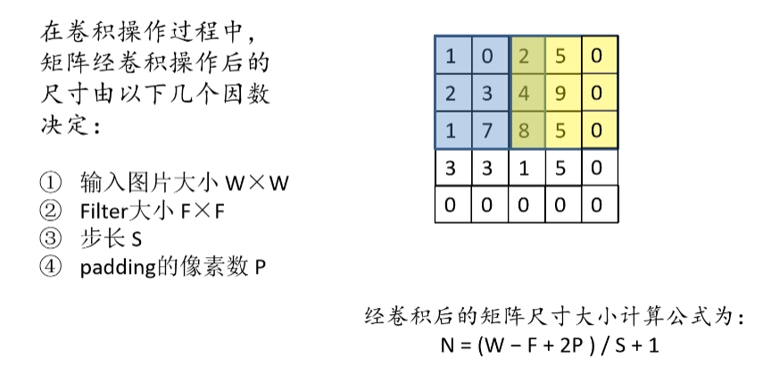
- 图中卷积后的矩阵大小：$(4 - 3 + 1) / 2 + 1 = 2$
- P：一般 padding 是两边同时的，但是图示只 padding 了右和下，所以P=1
四、池化层
目的
对特征层进行稀疏处理，减少数据运算量
MaxPooling 下采样层
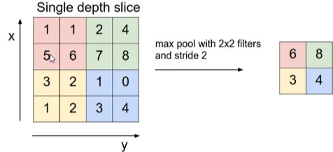
AveragePooling 下采样层
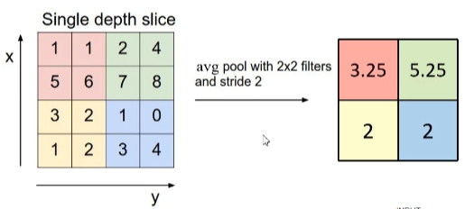
特征
- 没有训练参数（卷积层中的卷积核是有参数的），池化只需要在原始的特征层上求最大值或者平均数
- 只改变特征矩阵的宽度（w）和高度（h），不改变深度（channel）
- 一般池化和大小和（poolsize）和步距（stride）是相同的
本博客所有文章除特别声明外，均采用 CC BY-NC-SA 4.0 许可协议。转载请注明来源 SolitudeAB！